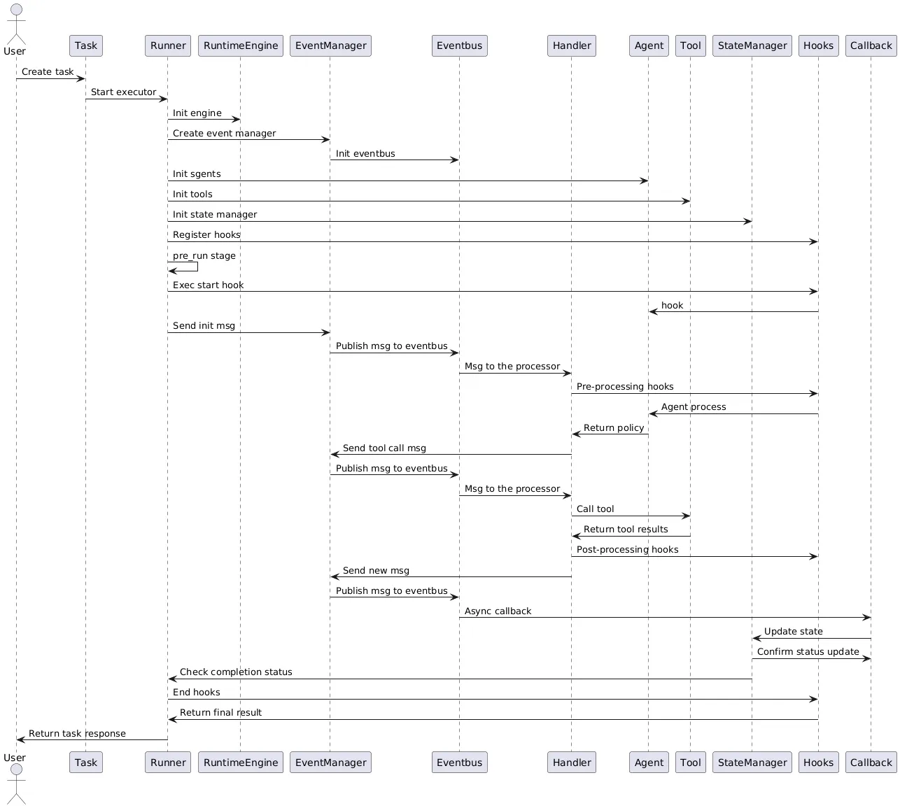

运行时概述（runtime overview）
AWorld的运行时是一个通用的，建立在计算引擎之上的，灵活的分布式执行框架。AWorld中提供了面向智能体的完整实现，并在系统中提供了：
-
完整的生命周期管理 —— 清晰的初始化、执行、清理阶段
-
灵活的执行模式 —— 事件驱动、调用驱动、自定义执行实现任意复杂的编排执行逻辑
-
统一的多执行引擎支持 —— 支持本地、Spark、Ray等多种计算后端
-
方便的分布式支持 —— 配置化支持任务的分布式执行和状态同步
-
完整的可观测性 —— 追踪、日志、事件状态、轨迹记录
-
全面的上下文 —— Session，任务，Agent级别的完整状态管理
-
强大的扩展机制 —— 面向不同维度的自定义扩展Hooks、Callbacks、Handler
-
可靠的错误处理 —— 支持重试、恢复等机制
运行时架构
框架图
┌────────────────────────────────────────────────────────────────┐
│ AWorld Runtime Framework │
├────────────────────────────────────────────────────────────────┤
│ │
│ ┌─────────────────────────────────────────────────────────┐ │
│ │ Runner Layer │ │
│ │ (EventRunner / Handler / Callback / Hooks ) │ │
│ └──────────────────┬──────────────────────────────────────┘ │
│ │ │
│ ┌──────────────────▼──────────────────┐ │
│ │ Context Layer │ │
│ │ ┌──────────────┐ ┌──────────────┐ │ │
│ │ │ Session │ │ Context │ │ │
│ │ └──────────────┘ └──────────────┘ │ │
│ └──────────────────┬──────────────────┘ │
│ │ │
│ ┌──────────────────▼──────────────────┐ │
│ │ Event Management Layer │ │
│ │ ┌──────────────┐ ┌──────────────┐ │ │
│ │ │ EventBus │ │ EventManager│ │ │
│ │ └──────────────┘ └──────────────┘ │ │
│ └──────────────────┬──────────────────┘ │
│ │ │
│ ┌──────────────────▼──────────────────┐ │
│ │ Compute Engine Layer │ │
│ │ ┌──────────┐ ┌──────────┐ ┌─────┐ │ │
│ │ │ Local │ │ Spark │ │ Ray │ │ │
│ │ └──────────┘ └──────────┘ └─────┘ │ │
│ └─────────────────────────────────────┘ │
│ │ │
│ ┌──────────────────▼──────────────────┐ │
│ │ Multi-Agent / Sandbox │ │
│ │ (Tools, Agents, Storage) │ │
│ └─────────────────────────────────────┘ │
│ │
└────────────────────────────────────────────────────────────────┘
关键流程
任务创建
↓
[Runner初始化]
├─ pre_run() : 验证、资源加载、上下文初始化
│
[运行时执行]
├─ do_run() : 核心执行逻辑
│ ├─ Event/Call : 驱动方式
│ ├─ Sync/Async : 同异步
│ ├─ Trace : 追踪
│ └─ ErrorProcess : 错误处理
│ └─ Trajectory : 轨迹处理
│
[运行时清理]
└─ post_run() : 资源释放、状态保存、通知
↓
任务响应返回
核心组件
Task - 任务定义
Task是AWorld能运行的三个核心（Agent， Tool）概念之一。
Task定义了要执行的任务的所有信息，一般要包括任务的输入、用到的Agent、需要的工具、依赖的上下文、执行的模式等信息。详见Task结构的一种实现。
from aworld.core.task import Task
from aworld core.common import StreamingMode
# 一个复杂的任务示例
task = Task(
name="complex_task",
input=user_input,
swarm=multi_agent,
conf={
"max_steps": 20,
"run_mode": "interactive",
"check_input": True
},
hooks={
"start": ["init_logging", "init_context"],
"error": ["handle_error", "send_alert"]
},
streaming_mode=StreamingMode.CORE
)
Runner - 任务执行器
Runner是任务定义执行的实体，也是运行时的核心，一般每一类任务(agent，评估，数据生成，训练)，都需要一类Runner负责其任务的完整生命周期和流程管理。
以Agent任务为例，事件驱动的Runner管理整个事件的循环和收发事件的状态，编排整个执行流程，同时基于事件串联上下游。
async def do_run(self):
# 发初始消息
await self.event_mng.emit_message(msg)
# 核心处理流程
await self._do_run()
# 生成Trajectory
await self._save_trajectories()
# 构建响应
resp = self._response()
RuntimeEngine - 计算引擎
RuntimeEngine抽象了不同的计算引擎后端，提供统一接口，能够便捷的将任务运行在指定的引擎之上，和分布式执行。内部隐藏了分布式计算的复杂性，让开发者可以专注于业务逻辑而不是底层的分布式系统细节。
可以根据需要扩展engine的能力。
class RuntimeEngine(object):
...
async def execute(self, funcs: List[Callable], *args, **kwargs):
pass
# 扩展gatcher能力
async def agather(self):
pass
...
Eventbus - 事件总线
Eventbus是AWorld框架中事件的核心通信基础设施，负责在系统各组件间传递事件消息。它采用发布-订阅模式，支持异步消息传递，实现组件间的解耦合。基于Eventbus，Agents、Tools和其他系统组件可以松散耦合地进行通信，提高系统的可扩展性和并发处理能力。目前支持immemory和redis两类eventbus。
async def publish(self, messages: Message, **kwargs):
"""发布消息."""
async def consume(self, message: Message, **kwargs):
"""消费消息."""
EventManager - 事件管理
EventManager作为事件管理体系的核心，负责管理事件的生命周期，包括事件的注册、分发和存储。它维护着事件处理器的注册表，并提供接口供组件订阅特定类型的事件。此外，EventManager还负责事件消息的持久化存储，支持事件的重放和审计功能，确保系统状态的可追溯性。
async def emit_message(self, event: Message):
# 存消息
await self.store.create_data(Data(block_id=event.context.get_task().id, value=event, id=event.id))
# 发送消息
await self.event_bus.publish(event)
# 流式
await self._handle_streaming(event)
async def messages_by_task_id(self, task_id: str):
# 获取任务的相关消息
Handler - 事件处理器
Handler是事件处理的具体执行单元，负责接收和处理通过Eventbus传递的事件消息。不同类型的Handler专门处理特定类别的事件，如AgentHandler处理智能体相关事件，ToolHandler处理工具调用事件等。Handler通过实现标准化的处理接口，确保各类事件能得到恰当的处理，并支持链式处理和异步执行。
Callback - 回调
Callback机制用于处理异步操作完成后的结果，特别是在工具执行或长时间运行任务完成后提供反馈。在AWorld中，Callback系统与状态管理紧密结合，确保异步操作的正确完成状态能被准确追踪和处理，避免因异步操作导致的状态不一致问题。
Hooks - 钩子注入
Hooks机制为AWorld提供了强大的扩展能力，允许开发者在任务执行的关键节点注入自定义逻辑。通过在预定义的钩子点（如任务开始前、LLM调用前后、工具执行前后等）注册钩子函数，开发者可以实现日志记录、输入输出处理、权限检查等功能，而无需修改核心代码。
StateManager - 状态管理器
StateManager负责跟踪和管理任务执行过程中的各种状态信息，包括运行状态、执行结果和错误信息等。它通过RunNode和NodeGroup等数据结构组织和维护执行状态，支持层级化的状态管理，提供等待机制以协调任务间的依赖关系，确保复杂任务流程的正确执行。
事件驱动的Agent运行时
AWorld面向Agent，实现了完整的事件驱动的Agent运行时流程：

所有相关的行为，模块和能力，都体现在这个完整流程中，如Context的更新，Trajectory构建，人机交互等。
为了方便的执行Runner，框架提供了Runners工具类，用以工具化执行不同形式的任务。
from aworld.runners import Runners
# 运行一个Agent或一组Agent (Swarm)
Runners.run(...)
# 运行一个或多个Task
Runners.run_task(...)
# 流式响应运行一个Agent或一组Agent (Swarm)
Runners.streaming_run(...)
# 流式响应运行一个Task
Runners.streaming_run_task(...)